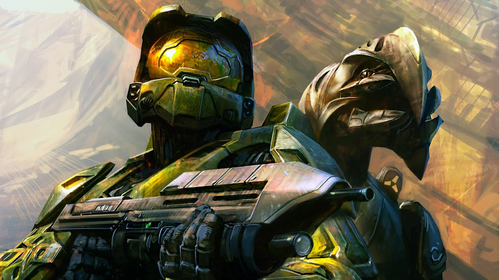
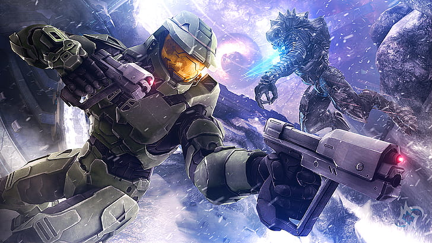
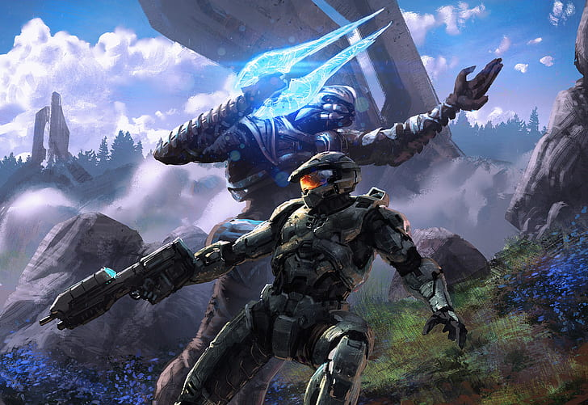

Bienvenido al mundo de Halo
La historia se centra en la lucha de la humanidad contra una alianza alienígena conocida como los Covenant, así como en el misterioso anillo de Halo y su capacidad para destruir la vida en el universo. El juego ha sido aclamado por su jugabilidad, gráficos y banda sonora, y ha generado numerosas secuelas, spin-offs y adaptaciones en otros medios.
-   
El Spartan Hiperletal
El Jefe Maestro, el Spartan de Clase Hiperletal, destaca como el mejor entre los Spartans. Su habilidad, valentía y destreza en el combate son incomparables. Desde su entrenamiento intensivo hasta su armadura avanzada, es una fuerza imparable en el campo de batalla. Es el último bastión de esperanza para la humanidad y un símbolo de coraje y sacrificio. El Jefe Maestro es el verdadero héroe que todos los demás Spartans aspiran a ser.